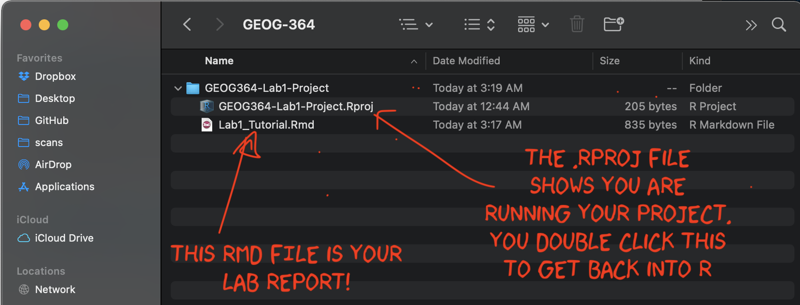
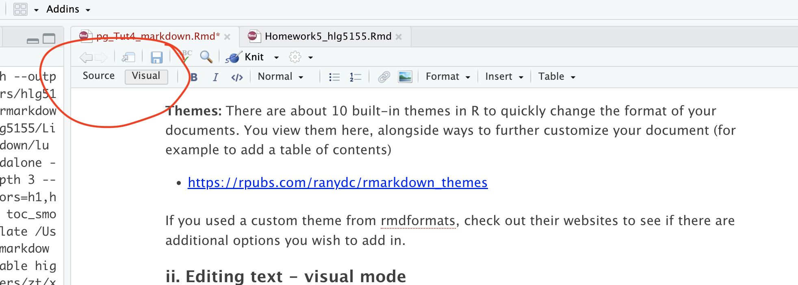
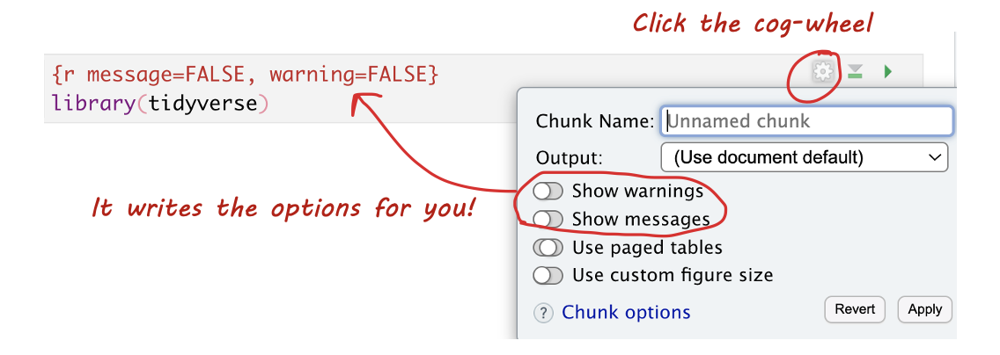

R-Markdown reports
R Markdown is a powerful tool that allows you to combine text, code, and outputs in a single document. This tutorial will guide you through creating an R Markdown document, using templates, understanding its components, and working with key features like visual mode, code chunks, and knitting.
There are also many more hints and tips here https://posit.co/blog/r-markdown-tips-tricks-1-rstudio-ide/.
Introduction to R-Markdown
What is R-Markdown?
Read more here: https://rmarkdown.rstudio.com
Typing commands into the console is like making a phone call to the computer—you communicate but don’t keep a record of your interactions. To save your commands for future use, we use scripts and documents. There are several types:
A basic script (
.Rfile): A blank notepad where you save code commands. When you “run” the script, R simply copies and pastes the commands into the console.An R Notebook or R Markdown document (
.Rmdfile): An interactive document where you can combine text, code, and output in one place. With a single click, you can convert.Rmdfiles into reports, websites, blogs, presentations, or interactive applications.
R Markdown is especially useful for labs because it allows you to integrate code, output, and written analysis seamlessly. Instead of taking screenshots, you can embed results directly in your document.
Markdown file structure

Your markdown file contains three main areas:
The YAML code at the top describes what the final output should look like.
For example this might be a website, a pdf, a presentation or one of these 21 other formats…https://rmarkdown.rstudio.com/lesson-9.html
It also includes other ‘meta-data’ for example the title/author name, whether you want a table of contents and any themes. For example, in the screenshot above, I included:
- The title
- The author (note,use your email ID not your name)
- Automatically created today’s date
- A floating table of contents
- Numbered sections (this won’t appear until you start typing section headings)
- The lumen theme.
See “Editing YAML” below for more information.
The report text.
- This is essentially the same as Microsoft word, where you can write up interpretations, include pictures, tables, links and equations.. See “Editing text” below for more information.
Code chunks
- These are spaces for you to R-Code. They are essentially “mini consoles”. To run the code inside, click the little green arrow on the right. This copies the code into the console, runs it, then copies the output underneath the code chunk, integrating it into your report. See “Editing R-Markdown” below for more information.
Creating an R-Markdown File
Basics
To create a new R Markdown document in RStudio:

- Go to
File→New File→R Markdown... - Choose a document type (HTML, PDF, or Word). For
now, | select
HTML. - Give your document a title and specify the author as | your Email ID e.g. hlg5155
- Click
OK - If this is your first time ever doing this or you’re running a new POSIT-Cloud project, then R-studio might ask to download some packages before it can do this this. Say yes.
- A new file should appear on your screen. At the top of that window (by the knit button, there is a save button. Save it as something relevant INSIDE YOUR PROJECT FOLDER!
RStudio will generate a default R Markdown file with an example of formatted text and an embedded code chunk.
Important
Before you continue, on your computer (outside R-Studio), go to your project folder
MAKE SURE THE RMD FILE SAVED IN YOUR PROJECT FOLDER. Also, check you didn’t accidentally create a load of sub-folders inside your lab. If so, delete/move things around until it looks like this.

Custom R-Markdown Templates
There are also now several package which contain professional markdown templates. Common examples include
- The
rmdformatspackage: See example themes here: https://github.com/juba/rmdformats - The
prettydocpackage: See example themes here: https://prettydoc.statr.me/themes.html
To use one of these packages:
Alternatively, you can replace your YAML code with the suggested code from that theme. |
 |

Important!
Sometimes rmdformats makes an extra subfolder and puts your report in there.
So before you continue, on your computer (outside R-Studio), go to your project folder
MAKE SURE THE RMD FILE SAVED IN YOUR PROJECT FOLDER. Also, check you didn’t accidentally create a load of sub-folders inside your lab. If so, delete/move things around until it looks like this.
Editing YAML
Basics
The basic RmD format is pretty boring. So if you go this route, it’s good to edit the YAML code to add in a few additional features. Here is some example YAML code that I often use as a baseline. CAREFULLY replace yours with this, paying attention to spacing.
---
title: "change to add your title"
author: "hlg5155 or your email ID"
date: "`r Sys.Date()`"
output:
html_document:
number_sections: true
toc: true
toc_float: true
toc_depth: 3
theme: journal
--- There are many more details about different options on these websites:
- https://bookdown.org/yihui/rmarkdown/html-document.html
- https://rstudio.com/wp-content/uploads/2015/03/rmarkdown-reference.pdf
- If you want to get really fancy, there is an interesting package to help you design YAML code here: https://education.rstudio.com/blog/2019/10/tools-for-teaching-yaml-with-ymlthis/
Themes
There are about 10 built-in themes in R to quickly change the format of your documents. You view them here, alongside ways to further customize your document (for example to add a table of contents)
If you used a custom theme from rmdformats, check out their websites to see if there are additional options you wish to add in.
Custom R-Markdown Templates
As I described in the previous section, you can also use other themes
from packages like rmdformats, but rather than just
changing the word “theme”, the entire YAML changes.
So the easiest way to do this is to create a blank new file for the template you want, then copy/paste the entire YAML code across to your report.
Editing markdown text
Visual vs source mode
RStudio’s standard output is “source mode” where you see your text in a raw format.
RStudio now provides a Visual Editor to simplify text formatting. When switched on, you see something similar to the final output format and get access to all the normal word processing buttons (e.g. bold/headings etc.). To switch between the two modes:
Click the Visual tab in the
.Rmdeditor.Use the toolbar to format text, add links, or insert images.
Switch back to Source mode to view the underlying Markdown format.

Visual mode is incredibly useful, because you don’t need to remember any of the keyboard commands for formatting text. But… it can be a pain when editing/deleting code-chunks. To do that, I often switch back to source mode.

Pictures and tables
These are easy to add using visual mode. Just go to the text-editing menu at the top of the report.
Headings
Please use these! They allow your table of contents to be created correctly which allows easy navigation in your reports. For example, Heading 1 = Chapter Title, Heading 2 = sub-title etc.
In visual mode, click on the line you want then look at the text formatting menu. Click the arrow by “normal” and change to the heading you want.
Mathematical equations
THESE GO INTO THE TEXT SECTION! NOT INTO A CODE CHUNK.
Although I have heard rumors you can copy/paste equations into R, the easiest way I have found is to:
First, get the equation you want in chatgpt or similar and ask it to output as LateX format
Type $$ to tell R you are adding an equation, then paste the equation in a line of its own.
e.g. If you type this into the TEXT (not a code chunk)
$$
E_n = -\frac{m e^4}{2 \hbar^2} \frac{1}{n^2}
$$In visual mode, you should see get
\[ E_n = -\frac{m e^4}{2 \hbar^2} \frac{1}{n^2} \]
If you want an equation on the same line, use single $ signs. E.g typing this into the TEXT
Hello! Here is an inline equation: $e^4$, that you can include mid-sentenceWill give you
Hello! Here is an inline equation: \(e^4\), that you can include mid-sentence.
Editing code
Adding new code chunks
In visual mode, you can add code chunks by clicking on the little green button at the top right and choosing R.

In source mode, you can add a code chunk by typing

Where the little symbols before the {R} are called BACK-TICKS. I often just copy/replace.
Running code chunks
There are several ways you can run the code in a code chunk. The easiest is to use the controls on each chunk.
To run that chunk → Click the green “Play” (▶) button in the top-right corner of the chunk.
To Run all chunks above → Click the small downwards arrow next to the left of the Play button.
Or via the Run menu on the top right.
Code Chunk Options
What are they?
Code chunk options control how your code behaves when you knit the document. You can suppress messages, hide warnings, or customize the appearance of your output. Here are some common options you might use:
message = TRUE/FALSE— Show or hide R messages when knitting.warning = TRUE/FALSE— Show or hide warnings. Errors will still be displayed.include = TRUE/FALSE— Show or hide both the code and its output.echo = TRUE/FALSE— Show or hide the code but still display its output.eval = TRUE/FALSE— Show the code, but don’t actually run it. Useful if you can’t make it work, but want to still knit and submit.
Editing Options in Source Mode
- Each code chunk starts and ends with three backticks. The
{rinside the curly braces indicates it’s R code. - After
{r, you can add options to modify the behavior of the code when knitting. For example, usemessage=FALSEandwarning=FALSEto suppress library loading messages and warnings.
Editing Options in View Mode
In View mode, click the small cogwheel next to the run triangle at the top of the code chunk to set these options without remembering commands.

Setting Default Options for the Whole Document
To apply settings to all code chunks, place this code chunk at the top of your document (below the YAML):
```{}
knitr::opts_chunk$set(echo=TRUE,
warning=FALSE,
message=FALSE)
```Many templates include default settings, but you can easily customize them to fit your needs.
Knitting
Kniting your files
The file on your screen isn’t the finished article. To see how it will look as a final version, we need to “knit” it.
Knitting an R Markdown document means converting it into a final output format (such as HTML, PDF, or Word). When you knit a document, RStudio executes the code chunks, formats the Markdown text, and generates a nicely formatted report.
Go to the top of the .Rmd file, find the knit button.
Press it (you might have to first save your script if you haven’t
already, then press it again). This will only work if you have all the
commands saved in your lab-script e.g. if you read in the data but
didn’t write the command into your report, it will crash.

IF YOU GET A KNITTING ERROR
The terminal text will update you as your report turns into a website. If you get an error, then the exact line number with the problem and a description of the error will be printed on the console. For example, here I tried to print out a variable that didn’t exist.